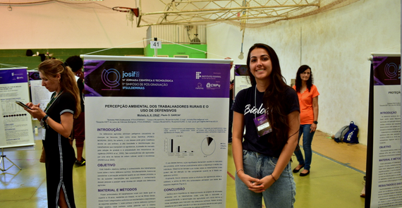
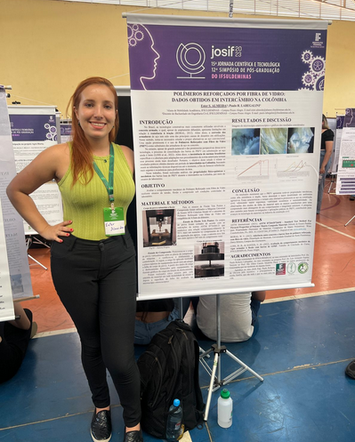
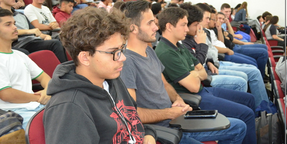

A Jornada da Computação no IFSULDEMINAS - Campus Machado
Uma formação que combina teoria, prática e conexão com a comunidade para preparar profissionais capazes de transformar tecnologia em soluções reais.
Formação abrangente
Base teórica sólida com foco em raciocínio computacional, métodos e resolução de problemas.
Infraestrutura moderna
Laboratórios equipados para apoiar atividades práticas, experimentação e desenvolvimento de projetos.
Comunidade e impacto
Projetos de pesquisa, extensão e eventos que conectam estudantes, campus e região.
Por que essa jornada se destaca
A jornada da computação no Instituto Federal do Sul de Minas Gerais (IFSULDEMINAS) - Campus Machado é marcada por um compromisso com a excelência na formação de profissionais capacitados para o dinâmico mercado de tecnologia.
Desde seus primeiros passos, os cursos de computação têm se dedicado a oferecer uma formação equilibrada, unindo fundamentos teóricos da ciência da computação com habilidades práticas essenciais para o sucesso profissional.
Ao longo de sua história, o campus Machado tem acompanhado a evolução da computação, adaptando currículos e metodologias para incorporar novas tendências e tecnologias.
A instituição investe em laboratórios modernos e bem equipados, proporcionando um ambiente favorável à experimentação e ao desenvolvimento de projetos práticos.
A jornada acadêmica também incentiva a participação em pesquisa e extensão, ampliando a experiência dos estudantes em contextos reais e colaborativos.
Esse conjunto fortalece a formação e amplia a empregabilidade dos egressos, que seguem para áreas como desenvolvimento de software, análise de dados e infraestrutura de TI.
Pilares da jornada
Formação abrangente
Equilíbrio entre teoria e prática para construir base técnica consistente.
Infraestrutura moderna
Laboratórios bem equipados para aprendizado prático e experimentação.
Pesquisa e extensão
Aplicação do conhecimento em contextos reais e parcerias com a comunidade.
Corpo docente qualificado
Professores com experiência acadêmica e atuação profissional relevante.
Engajamento com a comunidade
Eventos, workshops e ações que ampliam o impacto social do campus.
Ênfase na inovação
Estímulo ao desenvolvimento de soluções criativas para problemas reais.
Galeria da jornada


